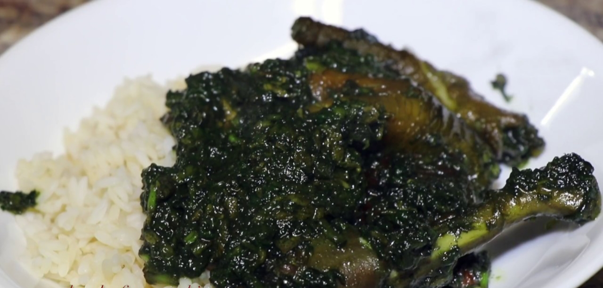

Potatoes Greens

Size = 310.00 kb | Resolution 1080x613
Potatoes-greens is a traditional dish popular to Montesrrado and Monrovia, in Liberia.
Potatoes-greens can be eaten with rice, it can be cook with either red oil or agro-oil.
Note: For this recipe , i will be using the agro-oil method.
Ingredients
- Fresh Potatoes leaves.
- Pepper
- Fish, Crab, Crab-Fish or meat
- Baking Soda
- Salt
- Seasoning
- Vita
- Oions or Garlic
Steps
- Wash potatoes leaves.
- Cut or slice into smaller pieces and add the slice the oion or garlic on top of it.
- Clean the fish, crab or meat and season it and steam it for 10 mins.
- After cutting the leaves, set the pot on the fire and pour the oil into it.
- Wait for 5-10 mins when the oil is hot.
- When the oil is hot , pour the slice leaves into the oil.
- When it is in the pot, add a little bit of baking soda to it.
- Let it fry for 10 mins, add the pepper and 2 vita
- After that , make sure the leaves looks a little dark green and add water .(your perference)
- Add the fish ,crab or meat and let it boil for 10 mins and add 2 more vita.
- Reduce the heat and let it boil slowly until you are sure all the water is dry out.